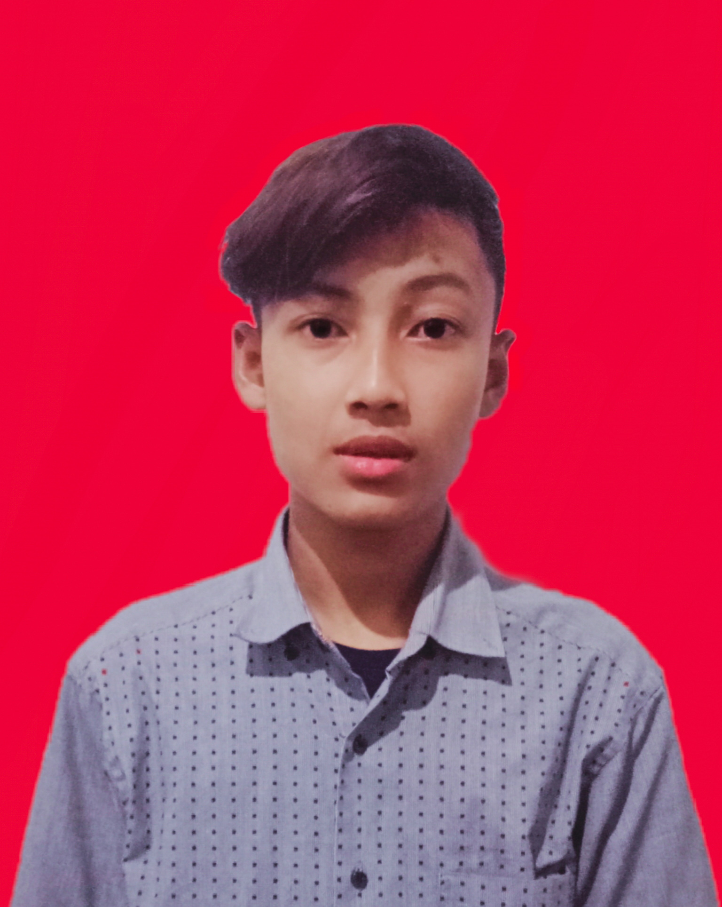

CURRICULUM VITAE

Informasi Pribadi
Nama :Ismatullah
Alamat :Kp.saung kedung 123
Tanggal Lahir :18 Juni 2000
Agama :Islam
Nomor Telepon :087789805565
Pendidikan
- SD N TALAGA
- SMP N 8 CILEGON
- SMA N 3 CILEGON
- Universitas AL-Khairiyah
Pengalaman Kerja
- HONORER SMP N 8 CILEGON (2019-sekarang)
Minat dan Hobi
- Bermain Bola
- Bermain Game
- Mendengarkan musik